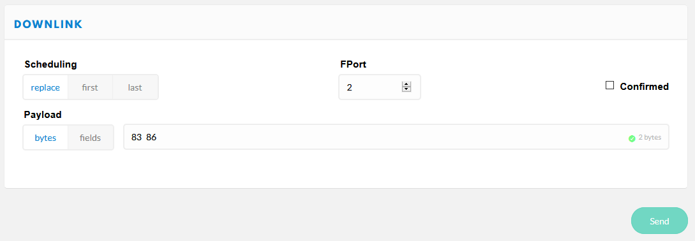

Remote control
The device listenes for remote control commands on LoRaWAN Port 2. Multiple commands per downlink are possible by concatenating them, but must not exceed a maximum of 10 bytes per downlink.
Info
Settings can be stored in NVRAM to make them persistant (reloaded during device startup / restart). To store settings, use command 0x21.
Send for example 83 86 as Downlink on Port 2 to get battery status and time/date from the device.

0x01 set scan RSSI limit
1 ... 255 used for wifi and bluetooth scan radius (greater values increase scan radius, values 50...110 make sense)
0 = RSSI limiter disabled [default]
0x02 set counter mode
0 = cyclic unconfirmed, mac counter reset after each wifi scan cycle, data is sent only once [default]
1 = cumulative counter, mac counter is never reset
2 = cyclic confirmed, like 0 but data is resent until confirmation by network received
0x03 set GPS data on/off
0 = GPS data off
1 = GPS data on, sends GPS data on port 4 (default, use port 1 for mobile pax counter), if GPS is present and has a fix
0x04 set display on/off
0 = display off
1 = display on [default]
0x05 set LoRa datarate
0 ... 15 see LoRaWAN regional parameters for details [default: 5]
Example for EU868:
DataRate Configuration Bit/s
0 LoRa: SF12 / 125 kHz 250
1 LoRa: SF11 / 125 kHz 440
2 LoRa: SF10 / 125 kHz 980
3 LoRa: SF9 / 125 kHz 1760
4 LoRa: SF8 / 125 kHz 3125
5 LoRa: SF7 / 125 kHz 5470
6* LoRa: SF7 / 250 kHz 11000
7* FSK: 50 kbps 50000
8 .. 14 reserved for future use (RFU)
15 ignored (device keeps current setting)
*) not supported by TheThingsNetwork
0x06 set LoRa TXpower
0 ... 255 desired TX power in dBm [default: 14]
0x07 set LoRa Adaptive Data Rate mode
0 = ADR off
1 = ADR on [default]
If ADR is set to off, SF value is shown inverted on display.
0x08 do nothing
useful to clear pending commands from LoRaWAN server quere, or to check RSSI on device
0x09 reset functions (send this command UNconfirmed only to avoid boot loops!)
0 = restart device (coldstart)
1 = (reserved, currently does nothing)
2 = reset device to factory settings and restart device
3 = flush send queues
4 = restart device (warmstart)
8 = reboot device to maintenance mode (local web server)
9 = reboot device to OTA update via Wifi mode
0x0A set payload send cycle
5 ... 255 payload send cycle in seconds/2
e.g. 120 -> payload is transmitted each 240 seconds [default]
0x0B set Wifi channel hopping interval timer
0 ... 255 duration for scanning a wifi channel in seconds/100
e.g. 50 -> each channel is scanned for 500 milliseconds [default]
0 means no hopping, scanning on fixed single channel WIFI_CHANNEL_1
0x0C set Bluetooth channel switch interval timer
0 ... 255 duration for scanning a bluetooth advertising channel in seconds/100
e.g. 8 -> each channel is scanned for 80 milliseconds [default]
0x0D set wakeup sync window
bytes 1..2 = wakeup sync window size in seconds (MSB), 0..255 (0 = no wakuep sync)
e.g. {0x02, 0x58} -> device adjusts it's wakeup time when it is +/- 5 minutes from top-of-hour [default = 0]
0x0E set Bluetooth scanner
0 = disabled
1 = enabled [default]
0x0F set WIFI antenna switch (works on LoPy/LoPy4/FiPy only)
0 = internal antenna [default]
1 = external antenna
0x10 set RGB led luminosity (works on LoPy/LoPy4/FiPy and LoRaNode32 shield only)
0 ... 100 percentage of luminosity (100% = full light)
e.g. 50 -> 50% of luminosity [default]
0x11 set Wifi scanner channel map bitmask
bytes 1..2 = wifi channel map bitmask (MSB), 0..8191
e.g. 0b1010000001001 sets channels 1, 4, 11, 13
0x13 set user sensor mode
byte 1 = user sensor number (1..3)
byte 2 = sensor mode (0 = disabled / 1 = enabled [default])
0x14 set payload mask
byte 1 = sensor data payload mask (0..255, meaning of bits see below)
0x01 = COUNT_DATA
0x02 = RESERVED_DATA
0x04 = MEMS_DATA
0x08 = GPS_DATA
0x10 = SENSOR_1_DATA
0x20 = SENSOR_2_DATA
0x40 = SENSOR_3_DATA
0x80 = BATT_DATA
bytes can be combined eg COUNT_DATA + SENSOR_1_DATA + BATT_DATA: `0x01 | 0x10 | 0x80 = 0x91`
0x15 set BME data on/off
0 = BME data off
1 = BME data on, sends BME data on port 7 [default]
0x16 set battery data on/off
0 = battery data off [default]
1 = battery data on, sends voltage on port 8
0x17 set Wifi scanner
0 = disabled
1 = enabled [default]
0x18 reserved
unused, does nothing
0x19 set sleep cycle
bytes 1..2 = device sleep cycle in seconds/10 (MSB), 0..65535 (0 = no sleep)
e.g. {0x04, 0xB0} -> device sleeps 200 minutes after each send cycle [default = 0]
0x20 load device configuration
Current device runtime configuration will be loaded from NVRAM, replacing current settings immediately (use with care!)
0x21 store device configuration
Current device runtime configuration is stored in NVRAM, will be reloaded after restart
0x80 get device configuration
Device answers with it's current configuration on Port 3.
0x81 get device status
Device answers with it's current status on Port 2.
0x83 get battery status
Device answers with battery voltage on Port 8.
0x84 get device GPS status
Device answers with it's current status on Port 4.
0x85 get BME sensor data
Device answers with BME sensor data set on Port 7.
0x86 get time/date
Device answers with it's current time on Port 2:
bytes 1..4 = time/date in UTC epoch seconds (LSB)
byte 5 = time source & status, see below
bits 0..3 time source
0x00 = GPS
0x01 = RTC
0x02 = LORA
0x03 = unsynched
0x04 = set (source unknown)
bits 4..7 esp32 sntp time status
0x00 = SNTP_SYNC_STATUS_RESET
0x01 = SNTP_SYNC_STATUS_COMPLETED
0x02 = SNTP_SYNC_STATUS_IN_PROGRESS
0x87 sync time/date
Device synchronizes it's time/date by calling the preconfigured time source.
0x88 set time/date
bytes 1..4 = time/date to set in UTC epoch seconds (MSB, e.g. https://www.epochconverter.com/hex)